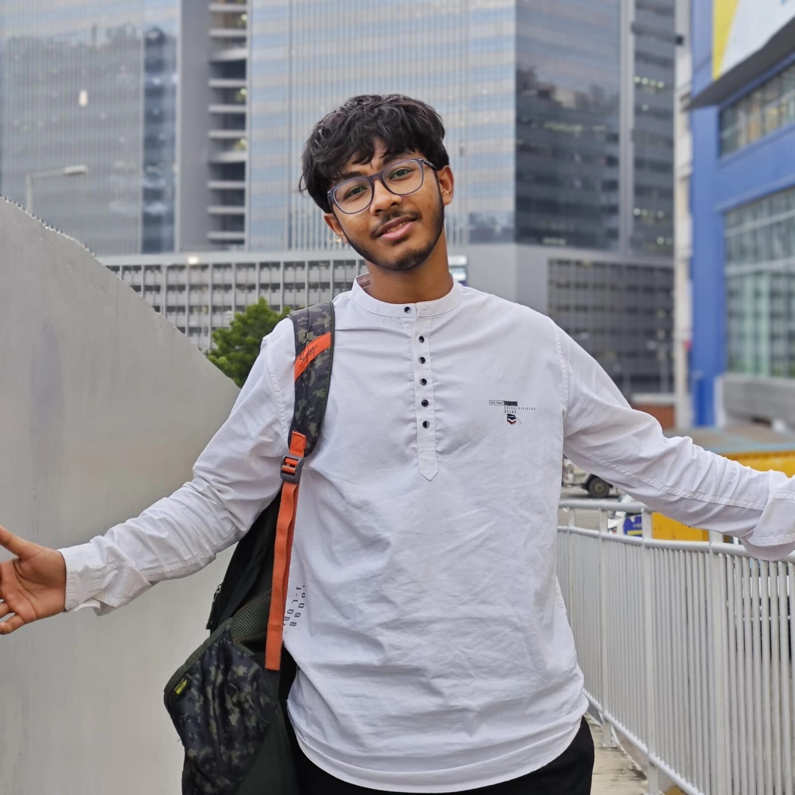

About Me
CSD student · Builder · Software Development

>" width="380" height="380" class="about-photo" >Who Am I?
I’m a first-year dual-degree (B.Tech + MS) student at IIIT Hyderabad, driven by a constant curiosity to understand what really happens beneath the surface of the systems I use. I’m drawn to the intersection of mathematics and computing, where abstract concepts meet practical implementation. Whether it’s working through linear algebra or dealing with low-level details in C, I enjoy problems that demand both precision and creativity.
My interest in building started early, but it evolved into a deeper focus on systems and logic as I got into programming. One of my projects involved implementing the classic strategy game Twixt in C, where I worked on translating game rules into efficient logic and handling edge cases cleanly. In another project, C-Unplugged, I built a terminal-based music player simulator in C, complete with features like albums, playlists, and track navigation. These experiences pushed me to think about structure, user flow, and how much can be achieved even within constrained environments.
Alongside building, I’ve also taken initiative in teaching. I started a course called “Aceiiit” after noticing the lack of structured resources for UGEЕ REAP preparation online. Through this, I work with students on developing the kind of thinking required to tackle REAP-style problems, focusing less on rote methods and more on intuition, pattern recognition, and disciplined reasoning.
Right now, I’m exploring areas like parallel computing and strengthening my fundamentals in algorithms and systems. I enjoy breaking down complex problems, optimizing for efficiency, and occasionally finding unconventional shortcuts that just work. I’m always open to discussions around problem solving, system design, or anything that pushes the boundaries of how we think about computing.
What I Work With
Some Milestones
-
Me and my friends came up with the idea of helping students preparing for ugee very randomly, so we thought we would release a course where we teach them to think through the kind of problems asked in ugee, especially in the reap section.
-
Joined IIIT Hyderabad with an All India Rank 2 in UGEE 2025!
-
Qualified National Standard Examination in Chemistry (NSEP) with a score of 89, placing me among the top 359 candidates who appeared for Indian National Chemistry Olmpiad (INChO) 2025
-
Passed class 10 with 99.2%
-
This is when I started studying at Ramakrishna Mission Vidyalaya, Vivekanagar